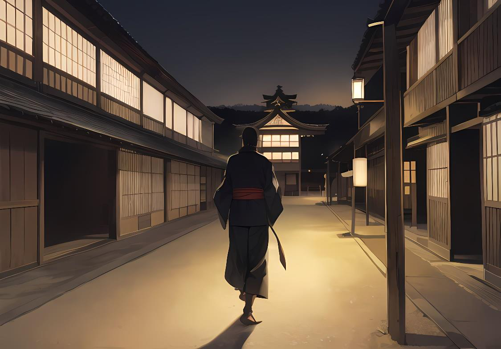

Organización y costumbresSenshi, misiones y matrimonios
Historia y Relaciones entre Yosais
Tsuchi Yosai (Fortaleza de la Tierra)
Hace 50 años Katsuro Raion unió a los Yosais (Fortalezas) para romper el yugo del Kotei Kobura, un tirano que tenía en condiciones de semiesclavitud al resto de los Yosais (Fortalezas). El mismo Katsuro se proclamó Kotei (Emperador) cambiando su nombre a
Tsuchi (Tierra), en honor a su propio Yosai (Fortaleza), y estableciendo una corte donde tratar temas con el resto de Yosais (Fortalezas), dándoles una independencia de la que jamás habían gozado.
Hi Yosai (Fortaleza del Fuego)
Viven un momento de esplendor, parecen recuperados de esa época en la que tenían que entregar todas las cosechas al Kotei (Emperador), y por primera vez en mucho tiempo, parecen haber recuperado la felicidad... excepto su Shogun, que perdió a su esposa en la batalla por derrocar al
Kobura. La fortaleza prospera, pero hay muchas dudas.
Yami Yosai (Fortaleza de la Oscuridad)
La Fortaleza de Yami tuvo que exiliarse buscando refugio bajo tierra, quedando oculta y proscrita para el resto de Yosai. Sus miembros —especialmente los Kobura (Cobra)— buscan venganza y recuperar su antiguo poder.
Organización y Costumbres
Función de los Senshi (Guerreros)
La función básica de los Senshi es proteger los Yosai, a petición de su Daimyo, de su Shogun o directamente del Kotei (Emperador), y evidentemente también por iniciativa propia.
Cómo se protegen los Yosai es algo absolutamente subjetivo: un ataque a otro Yosai puede considerarse una acción preventiva de protección, aunque seguramente tendrá consecuencias.
En la práctica, a un Senshi o grupo de Senshi se les asigna una misión y se espera que la cumplan y que, mientras lo hacen, aumente el prestigio tanto de su Kazoku como de su Yosai.
Matrimonios y Kazokus (Casas)
Los matrimonios funcionan como alianzas y marcan el prestigio de una gran casa.
Casar a alguien de un Kazoku menor con alguien de un Kazoku mayor aumenta el prestigio de la primera, aunque disminuye el de la segunda; puede haber excepciones, cuando alguien de una casa menor es tan excepcional como para ser importante por sí mismo, un matrimonio con dicho Senshi se considera un aumento de estatus.
Una forma de quitar poder a otro Kazoku mayor es que el resto les niegue matrimonio, de tal modo que los Kazokus (Casas) se autorregulan si uno de ellos no está en sintonía con el resto, o no tiene suficiente prestigio para mantenerse. Es raro ver una casa mayor caer a menor, pero no es imposible. Para que caiga, necesita el voto unánime de las otras cuatro casas, del Shogun (Señor de la Guerra), y por supuesto, el Kotei (Emperador) tiene derecho a veto.
En un matrimonio, la pareja pasa a ser parte de un solo Kazoku (Casa), y éste habrá sido previamente acordado por los Daimyos (Señores), junto a la alianza matrimonial. Así, un Senshi Risu (Guerrero de la Casa de la Ardilla) puede convertirse en un Sanshoo (Salamandra).
En raros casos, un Kazoku menor tiene casi tanto prestigio como uno mayor, y su Daimyo (Señor) es invitado a las reuniones del Consejo, aunque no tiene derecho a voto.
Aún más raro es el caso de matrimonios entre Kazokus (Casas) de distintos Yosais (Fortalezas) pero también se ha dado, y se puede dar.
